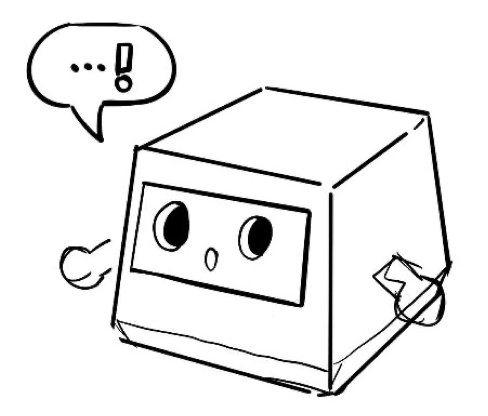
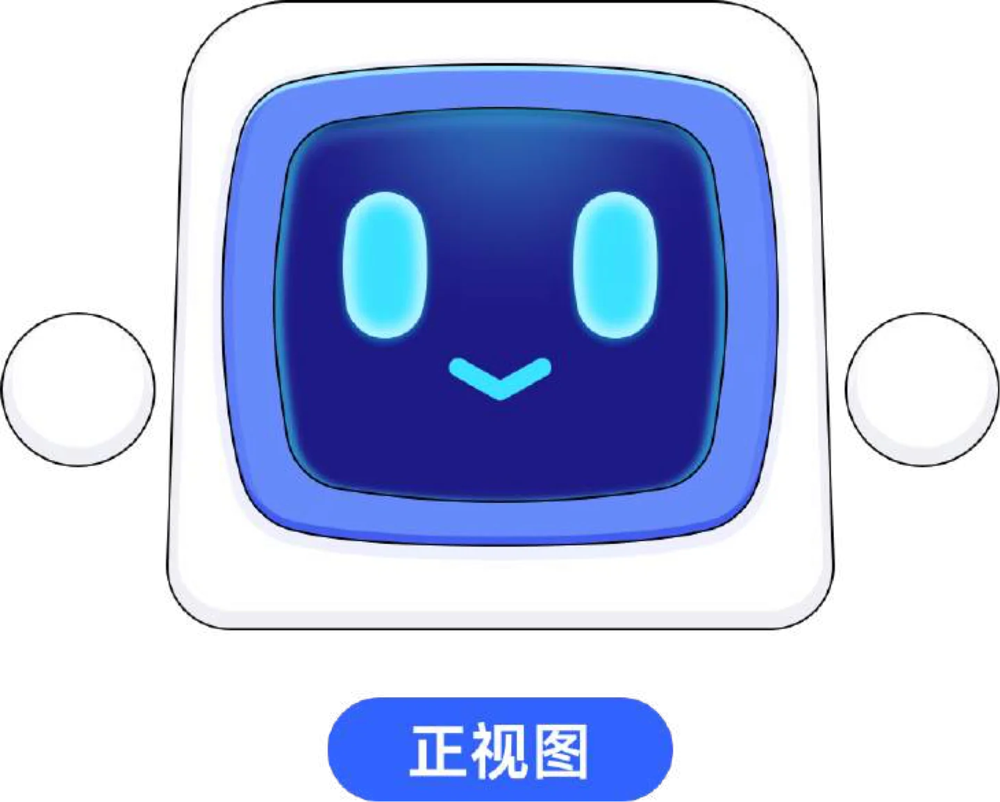
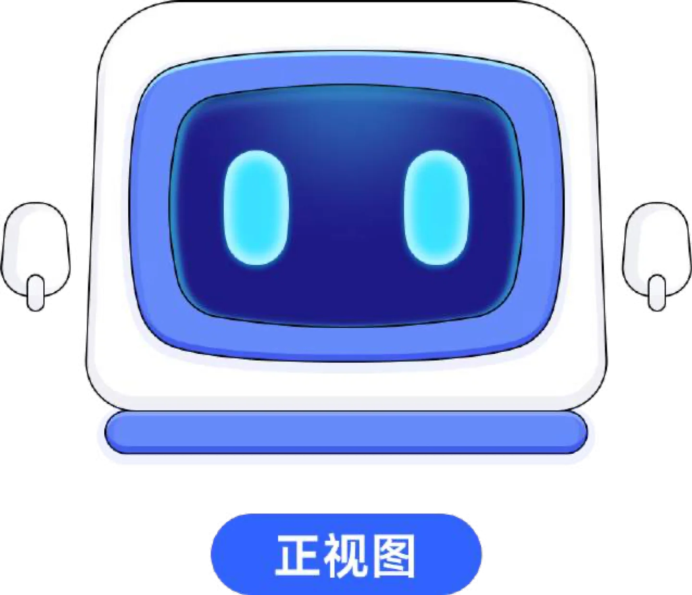
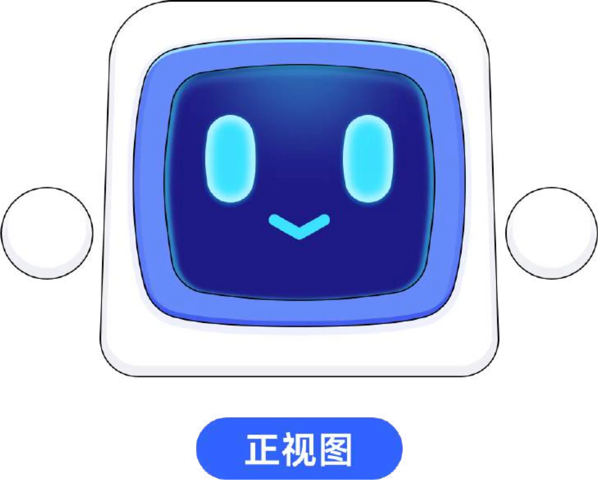
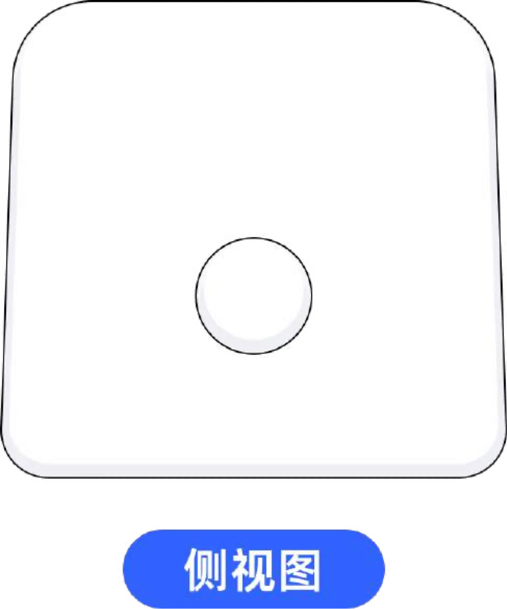
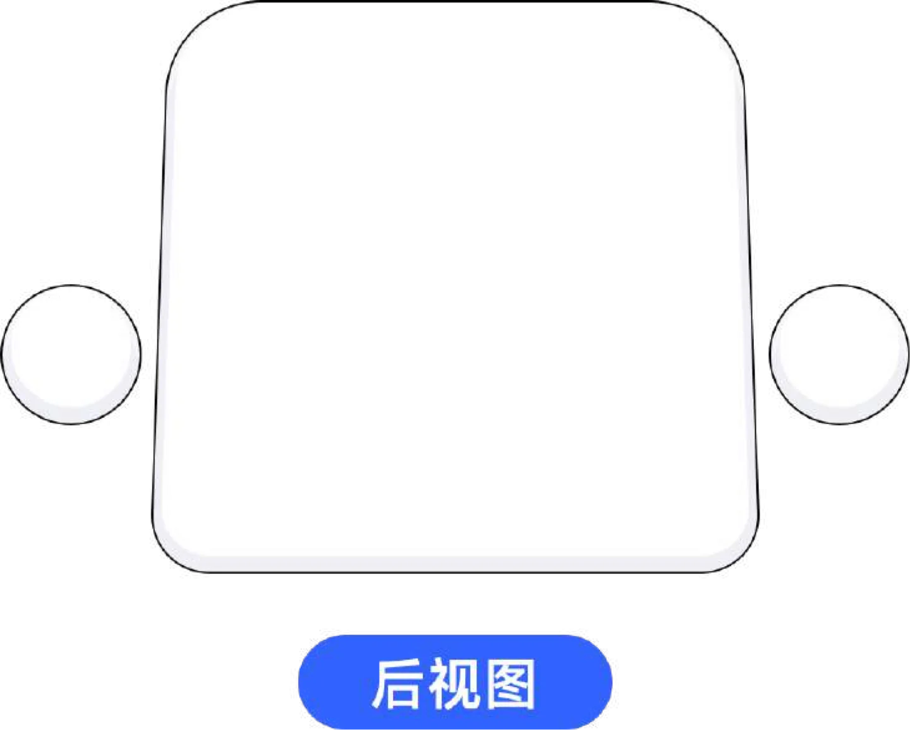
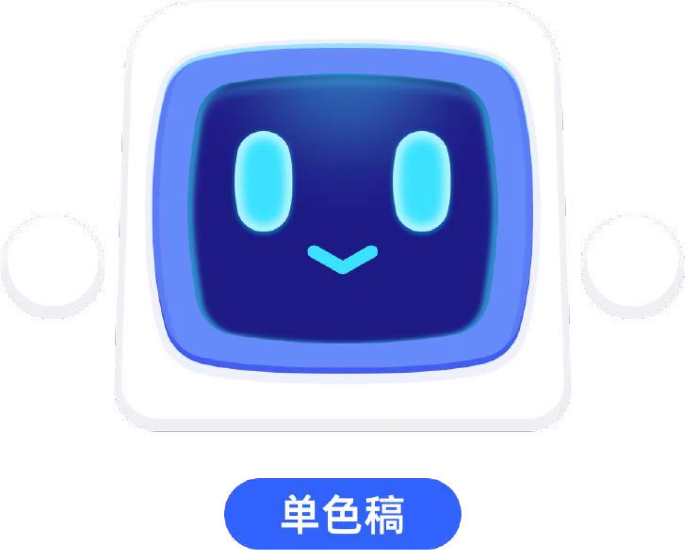
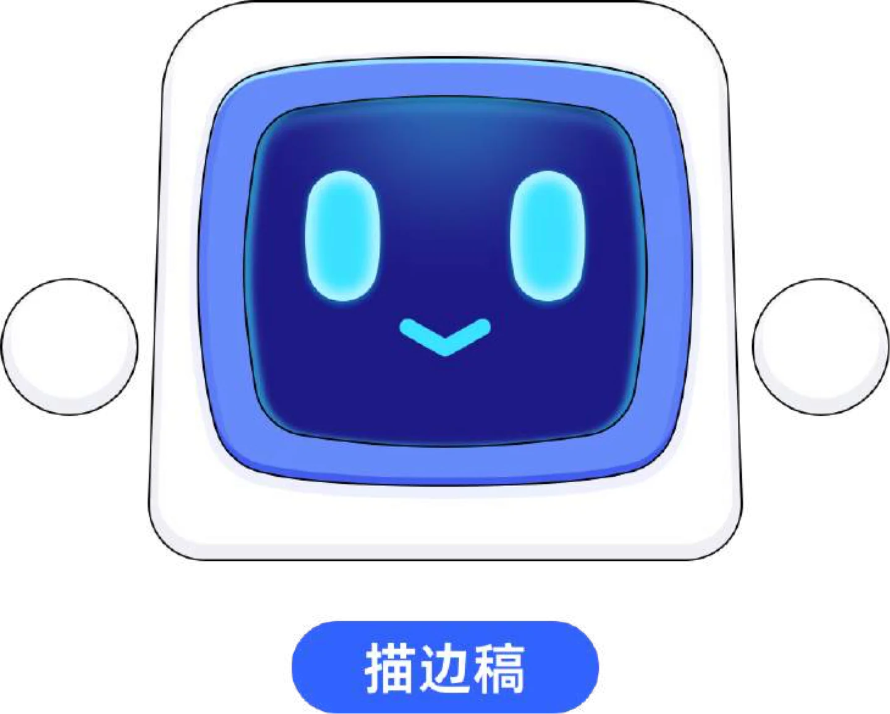
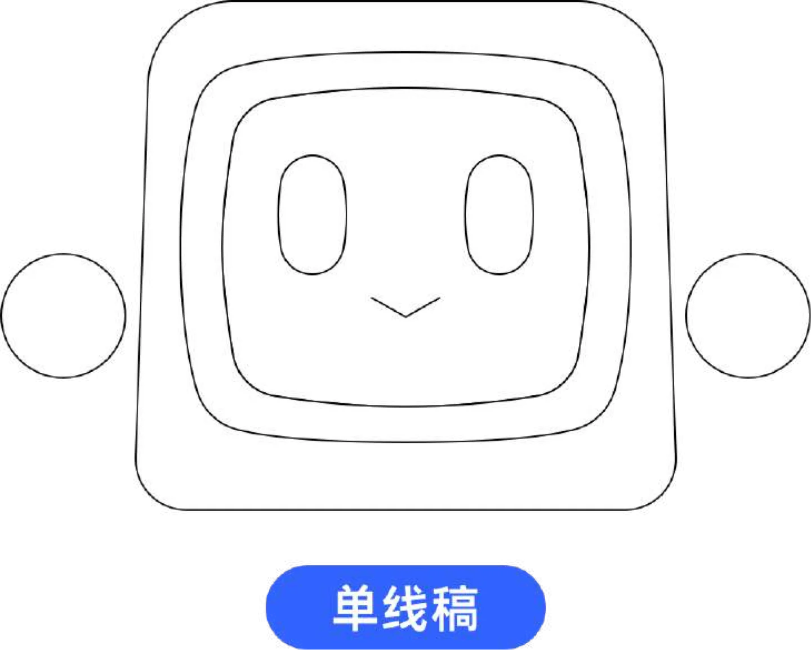

01 · 概念线稿以对话气泡、心形与小星星表现角色的沟通、陪伴和轻快感；立方体轮廓为后续结构建立基础。
为 KK键盘设计一位具有屏幕感和陪伴感的机器人角色。从草图中的方盒轮廓出发，逐步建立圆角显示屏、发光眼睛与双侧耳部的核心辨识特征，并沉淀成可复用的角色规范。

设计过程先确定亲和的方形主体和电子屏幕，再以发光眼睛、微笑嘴角和圆形耳部赋予角色表情；随后通过不同视图与图形规范确保角色能稳定地延展到产品各处。


多视图明确主体厚度、耳部的位置和屏幕面板的层级关系，让角色在插画、动效和产品界面中的角度变化保持一致。

正视图集中呈现屏幕表情与对称耳部。
侧视图标注角色体块厚度与侧面结构。
后视图补齐背面轮廓，形成完整三视图。通过成品正视图、单色稿、描边稿与线稿，规定不同场景下应保留的角色特征，使图标尺寸缩小或单色输出时仍然清晰可辨。
深蓝屏幕与青色表情形成视觉焦点，白色外壳保持轻盈。
抽取大轮廓与表情特征，用于受限的单色应用场景。

以轮廓和内部线条保留结构层级，支撑印刷与简化展示。

角色规范覆盖结构视图、基础色彩、单色表现和描边样式。它让后续页面、图标、物料或动效制作可以在同一套角色语言上持续扩展。

基础线稿